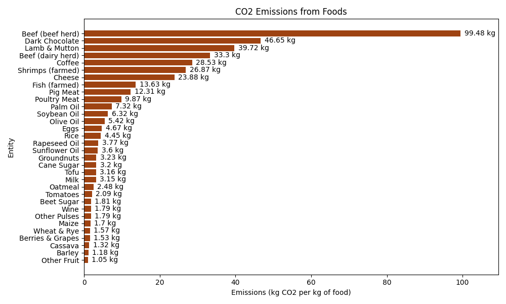
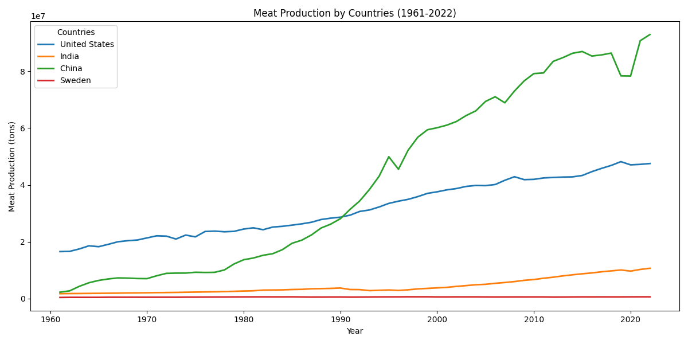
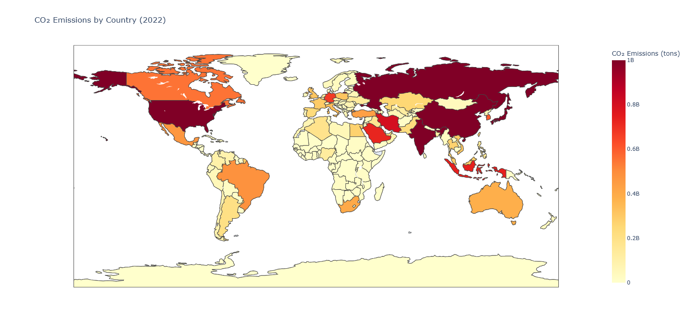
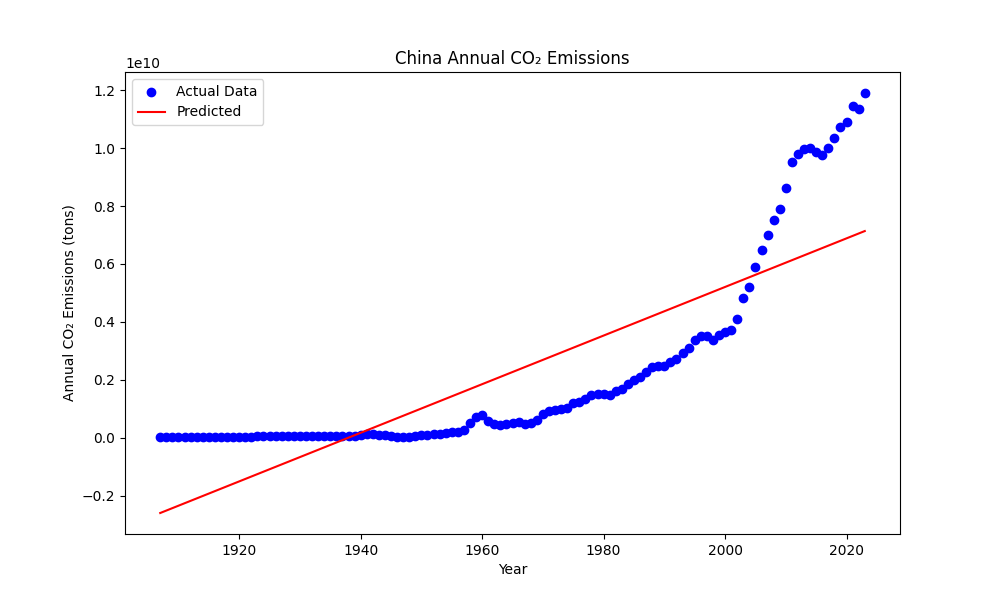

Introduction
This project looks at how what people eat affects carbon emissions and how these choices relate to the planet’s health. It plans to assess the environmental outcomes of eating meat and the patterns of meat consumption globally and individually. It will explore how people’s food choices influence carbon emissions and environmental health, how different countries produce meat, the trends that appear over time, and how nations with high levels of meat production add to carbon emissions and what this means for environmental health.
Research Question 1: How do individuals' dietary choices contribute to carbon emissions and shape environmental sustainability?
This question will explore the relationship between food choices and carbon emissions and sustainability. We will then look at the carbon footprint of meat, dairy and plant-based diets. So, the idea is, through the analysis, we want to show how much less carbon emissions there are by everyone having sustainable dietary habits and the positive impact we could have on the environment.
Nutrition is the most fundamental requirement of human life which is diversified with different methods. Some of these diets are notable due to their ethical, environmental or health-based values — vegan or vegetarian diets, for instance. With the environmental consequences of both plant-based and animal-based dietary preferences on a population- and global-scale it has been an increasingly important area of study. Vegetarian and veganism have always been a topic of debate for a long time. The advocates of plant-based nutrition tend to focus on the environmental and ethical damage of meat-eating, but there’s a very large segment of the population which prefers meat-based eating. Production of beef is among the greatest sources of carbon emissions as shown in the data. In comparison, foods from plants like lentils and chickpeas have a far less carbon footprint. To check the accuracy of this thesis, we will evaluate it from a more global perspective by comparing countries' meat production rates with their carbon emissions in the following stages. 
Research Question 2: "How do global meat production patterns differ across countries and what trends can we observe over time?"
In the previous graph, we observed that meat production generates significantly higher carbon emissions compared to other food products. Based on this, we decided to examine meat production rates across different countries. Our goal is to explore the accuracy of the relationship between meat production and CO2 emissions and assess the environmental implications of these trends.
The graph illustrates the changes in meat production across major producing countries from 1961 to 2022. China has shown remarkable growth in meat production, rising from approximately 1 million tons in 1961 to over 8 million tons by 2022. The United States, on the other hand, has seen a more stable increase in production, growing from 5 million tons in 1961 to around 10 million tons in 2022. While the U.S. has experienced steady growth, China's production increase, particularly since the early 2000s, has been more pronounced, establishing it as a dominant force in global meat production. China's rapid increase in meat production in recent years positions it as a leading global producer, with its share expected to continue growing. These trends highlight regional differences in meat production and further emphasize the environmental impact of these shifts. These data points provide insight into how meat production differs across countries and how these changes over time influence environmental sustainability. The increases in production in both China and the U.S. are defining global meat production trends, signaling a period where the environmental consequences of these shifts are becoming increasingly significant. Research Question 3: Which countries with high meat production contribute most to carbon emissions, and what are the implications for global sustainability?
At the outset, we observed that meat production generates significantly more carbon emissions compared to other food products. With this finding in mind, we aimed to explore the relationship between meat production and carbon emissions in a more detailed manner. Meat production is not only a key factor in food production but has become a critical determinant of global environmental sustainability. Understanding its environmental impact is therefore essential for taking meaningful steps in the global fight against climate change.
In recent years, countries with high levels of meat production, particularly China and the United States, have contributed significantly to global CO2 emissions. As meat production has increased to meet growing demand, its carbon footprint has risen accordingly. For example, in 1961, China produced around 1 million tons of meat, but by 2022, this figure surged to over 8 million tons. Similarly, the United States, which produced 5 million tons in 1961, reached 10 million tons by 2022. As production levels rise, the environmental impacts of meat production are becoming more pronounced. This trend is not only evident in major producers but is also observed in developing countries, where rising demand for meat further exacerbates emissions. To illustrate this relationship visually, we created a heatmap to analyze carbon emissions across different countries. The heatmap highlights countries with higher meat production in deep red, while countries with lower emissions are shown in orange and yellow tones. For instance, China and the U.S. stand out in darker red shades, reflecting their significant contribution to global emissions. On the other hand, countries like Sweden appear in lighter colors, indicating their relatively low emissions. This visualization helped us clearly demonstrate the direct link between meat production and carbon emissions. In conclusion, the strong correlation between meat production and carbon emissions tells an important story for global sustainability. The environmental impact of the livestock industry is becoming increasingly evident. However, through our findings, we also discovered that shifting towards plant-based alternatives can significantly reduce emissions. These insights support our narrative, showing that sustainable dietary habits could help mitigate the negative environmental effects associated with meat production. To analyze China's annual carbon emissions, we grounded this study within the framework of the three core research questions from the DataLatte project. The first question focused on the contribution of individual dietary habits to carbon emissions, while the second examined meat production patterns and trends across countries. The third question aimed to analyze how carbon emissions differ across countries on a global scale. To delve deeper into the dramatic rise in emissions and its impact on global sustainability, we chose to focus on China. Over the past century, China's economic growth and increased meat production have caused a significant rise in emissions, positioning the country as one of the most critical contributors to the global carbon footprint.
In our study, data from 1920 to 2022 were analyzed using a linear regression model. Years were used as the independent variable, while annual carbon emissions were used as the dependent variable. The results clearly showed a sharp increase in China’s carbon emissions starting in the 1960s. This period coincides with a time of rapid industrialization and increased agricultural activities, such as meat production. In the graph, the red regression line effectively illustrates the general trend in emissions, while the blue dots represent actual historical data. The high R² score of the model confirms its ability to accurately explain the annual trend in carbon emissions, providing a reliable foundation for future projections. This analysis not only highlights China’s role in carbon emissions but also serves as a stark warning for global sustainability. Combined with the findings from the first two research questions, China’s role in meat production and carbon emissions serves as a critical example for shaping environmental policies worldwide. The pressure created by rising emissions in China underscores the urgent need for strategic solutions, such as transitioning to plant-based diets. These findings clearly demonstrate the importance of taking action, both on an individual and national level, to address the environmental challenges posed by increasing carbon emissions. Conclusion
Research Question 1 revealed that individual dietary choices, particularly those involving meat and dairy products, contribute significantly to carbon emissions. Plant-based diets were shown to have a substantially lower carbon footprint compared to meat-based diets. This finding reinforces the need to adopt sustainable dietary habits to mitigate the environmental impact of meat consumption. Through line and bar chart analyses, we highlighted the stark contrast in carbon emissions between plant-based and animal-based foods. These insights support the idea that transitioning to plant-based diets could significantly reduce carbon emissions and improve environmental sustainability.
Research Question 2 examined global meat production patterns and their variation across countries. In recent decades, China and the United States have experienced substantial growth in meat production, becoming key contributors to global CO2 emissions. This trend demonstrates the increasing global environmental pressure resulting from growing meat production. Visualizations, including a line chart, illustrated the rapid production increases in these countries and their impact on global meat production patterns. These trends underline the necessity of addressing the environmental challenges posed by large-scale meat production. Research Question 3 focused on the environmental impact of high meat-producing countries, particularly China and the U.S., on global carbon emissions. A heatmap was used to visualize emissions across countries, with darker shades representing higher emissions. China and the U.S. stood out as major contributors, directly linking meat production to significant carbon emissions. A supporting bar chart further demonstrated the correlation between these countries' increasing meat production and their environmental impact, clearly reflecting the broader implications for global sustainability. Ultimately, this project has demonstrated the profound environmental consequences of dietary habits, especially the consumption of meat. Meat production and consumption are among the largest contributors to carbon emissions, exacerbating global environmental challenges. However, our findings suggest that transitioning to more sustainable diets, particularly plant-based ones, offers a viable solution to reducing emissions. The visuals and data-driven analysis in this project effectively illustrated the environmental impact of meat production and provided actionable insights for addressing this issue. This study highlights the interconnectedness of individual choices, global production patterns, and planetary health. Our collective dietary decisions today will shape the environmental legacy we leave for future generations. By embracing sustainable dietary habits, we can take meaningful steps toward a healthier planet. This is why it is crucial to pay attention to what we eat and how it impacts the environment, as mindful choices can lead to a better world and a more sustainable future for all.